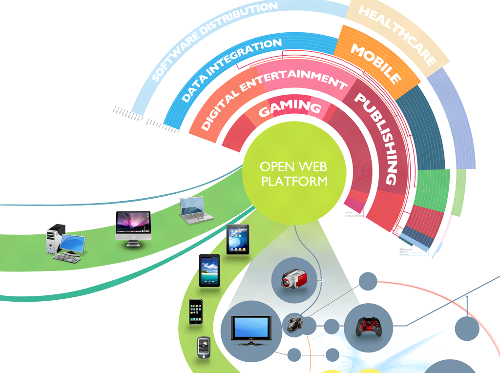
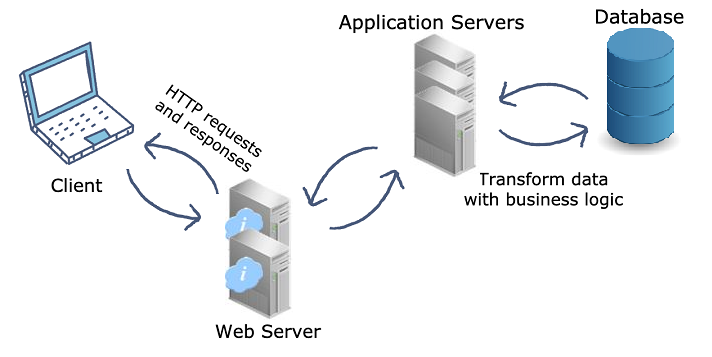

The Web Platforms
What is Web Platforms?
Web Platforms refer to a type of software application that provides a set of tools and services for creating and managing web-based applications and websites. A web platform typically includes a combination of technologies, programming languages, and frameworks that are designed to simplify the process of building and deploying web applications.

Examples of web platforms include content management systems (CMS) like WordPress, e-commerce platforms like Shopify and Magento, social media platforms like Facebook and Twitter, and cloud computing platforms like Amazon Web Services (AWS) and Microsoft Azure.
Web platforms often provide developers with pre-built components, templates, and plugins that they can use to create web applications quickly and easily. They may also offer features such as user authentication, database management, and content delivery networks (CDN) to improve website performance and security.
Web platforms are popular because they allow developers to focus on creating the functionality and features of their web applications without having to worry about underlying infrastructure and technical details. This can save time and resources and enable developers to create complex web applications more quickly and efficiently.
There are many examples of Web Platforms, including:
- Social Media Platforms such as Facebook, Instagram, and Twitter, which provide a range of features for users to create, share, and interact with content.
- E-commerce Platforms such as Amazon and Shopify, which provide tools and services for businesses to sell products online.
- Content Management Systems (CMS) such as WordPress and Drupal, which enable users to create and manage websites and digital content.
- Cloud Computing Platforms such as Amazon Web Services (AWS), Microsoft Azure, and Google Cloud, which provide a range of tools and services for deploying and managing cloud-based applications and infrastructure.
- Payment Processing Platforms such as PayPal and Stripe, which provide tools and services for processing online payments.
- Collaboration Platforms such as Slack and Microsoft Teams, which provide tools and services for teams to communicate and collaborate online.
- Job Search Platforms such as LinkedIn and Indeed, which provide tools and services for job seekers and employers to connect and find employment opportunities.
These are just a few examples of the many web platforms that exist, each with its own unique set of features and services for users.
Web Servers, Web Application Servers, Content Delivery Networks (CDNs), and Edge Computing Platforms are all examples of platforms that offer services that are useful to websites and web-based applications.
Web Servers are software applications that process and respond to HTTP requests from web browsers. They serve web pages and other content to users over the internet. Examples of popular web servers include Apache, Nginx, and Microsoft IIS.
Web Application Servers are similar to web servers, but they are specifically designed to support web applications that require more complex functionality than simple web pages. Web application servers provide a runtime environment for web applications and offer additional services such as session management, load balancing, and security features. Examples of popular web application servers include Tomcat, JBoss, and Microsoft IIS.
Content Delivery Networks (CDNs) are networks of servers that are distributed across multiple geographic locations. They store and deliver web content, such as images, videos, and other static files, to users based on their geographic location. CDNs can help to improve website performance and reduce latency by delivering content from a server that is physically closer to the user.
Edge Computing is a type of computing infrastructure that brings processing power closer to the end user. It involves deploying servers and other computing resources at the network edge, rather than in centralized data centers. Edge computing can help to improve the performance of web applications by reducing latency and improving response times.
All of these platforms offer services that can help to improve the performance, security, and scalability of websites and web-based applications. They are often provided as a service, which means that users can access them on a pay-as-you-go basis without having to worry about managing and maintaining the underlying infrastructure themselves.
Web Servers
Web Servers are software applications that are responsible for processing and responding to HTTP requests from web browsers. They serve web pages and other content to users over the internet.
When a user requests a web page, their browser sends a request to the web server, which then processes the request and sends back the requested content, typically in the form of an HTML document. Web servers can also serve other types of content, such as images, videos, and audio files.
Web servers work by listening for incoming requests on a specific port, typically port 80 for HTTP requests and port 443 for HTTPS requests. When a request is received, the web server processes the request and returns a response to the client.
Popular web servers include Apache, Nginx, Microsoft IIS, and Google Web Server (GWS). These servers are often used in conjunction with other web development technologies, such as programming languages like PHP, Python, and Ruby, as well as databases like MySQL and PostgreSQL.
Web servers can be hosted on a variety of platforms, including dedicated servers, virtual private servers (VPS), and cloud-based platforms like Amazon Web Services (AWS) and Microsoft Azure. They are a critical component of the internet infrastructure and are used by millions of websites and web applications around the world.
Web Application Servers
Web Application Servers are software frameworks that provide a runtime environment and services for web-based applications. These servers typically provide a range of features and services that enable web developers to create dynamic, data-driven web applications that are more complex than simple web pages.

Web application servers often include a variety of built-in features and services, such as support for multiple programming languages, session management, security features, database connectivity, and more. They typically provide a way for developers to deploy web applications in a scalable and reliable way, with features like load balancing, clustering, and failover.
Examples of popular web application servers include Apache Tomcat, JBoss, IBM WebSphere, and Microsoft IIS. These servers are often used with web development frameworks such as Ruby on Rails, Django, and Spring.
Web application servers are an essential part of many modern web applications, enabling developers to build and deploy sophisticated web applications with rich functionality and features. They provide a powerful foundation for creating web applications that can handle large volumes of traffic, data, and user interactions.
Content Delivery Networks
A Content Delivery Network (CDN) is a distributed network of servers that are strategically placed in multiple locations around the world. CDNs are used to store and deliver web content, such as images, videos, and other static files, to users based on their geographic location.
When a user requests a piece of content from a website or web application, the request is routed to the nearest CDN server, which then delivers the content to the user's browser. This approach can help to improve website performance and reduce latency, as the content is served from a server that is physically closer to the user.
CDNs typically operate by caching content on servers located in different regions or countries. When a user requests a piece of content, the CDN will deliver the content from the nearest server to the user, rather than serving it from the original server. This can help to reduce the amount of time it takes for the content to load and improve the overall user experience.
CDNs can also help to improve website scalability and availability by distributing traffic across multiple servers. This can help to prevent website downtime or slow performance during periods of high traffic.
Some popular CDN providers include Cloudflare, Akamai, and Amazon CloudFront. These providers offer a range of features and services, such as real-time analytics, security features, and support for SSL/TLS encryption.
CDNs are used to improve website performance, reduce latency, and improve scalability and availability by caching and delivering web content from servers located closer to the user.
Edge Computing
Edge computing is a distributed computing paradigm in which computation is performed at the edge of the network, closer to the source of data and the end-users. This approach enables faster processing of data, reduced latency, and improved reliability by reducing the need to transfer data back and forth to centralized data centers or the cloud.
In edge computing, computation and data storage are moved closer to the devices and sensors that generate the data, often using small, low-power devices like Raspberry Pi or microcontrollers. This enables devices to perform more tasks locally, without relying on a centralized server or cloud provider.
Edge computing can be useful for a variety of applications, including Internet of Things (IoT) devices, smart homes, autonomous vehicles, and industrial automation. For example, sensors on a manufacturing assembly line can perform real-time data processing and analysis at the edge, allowing for faster response times and improved efficiency.
Edge computing can also be combined with other technologies, such as machine learning and artificial intelligence, to enable more advanced data processing and analysis at the edge. This approach can reduce the amount of data that needs to be transferred to the cloud for processing, improving the speed and reliability of data processing and reducing bandwidth costs.
Some examples of companies that provide edge computing solutions include Amazon Web Services (AWS), Microsoft Azure, and Google Cloud. These providers offer a range of tools and services for deploying and managing edge computing applications.
About
- If you want to learn more, you can search for it in your browser.
- The content of this site is not mine to take credit. I only get information on the internet.
- Click to Watch my Video